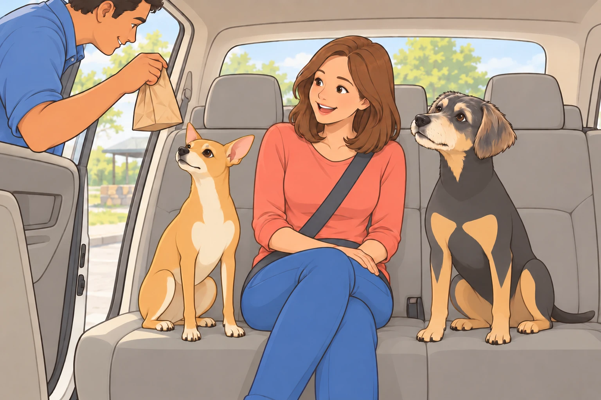
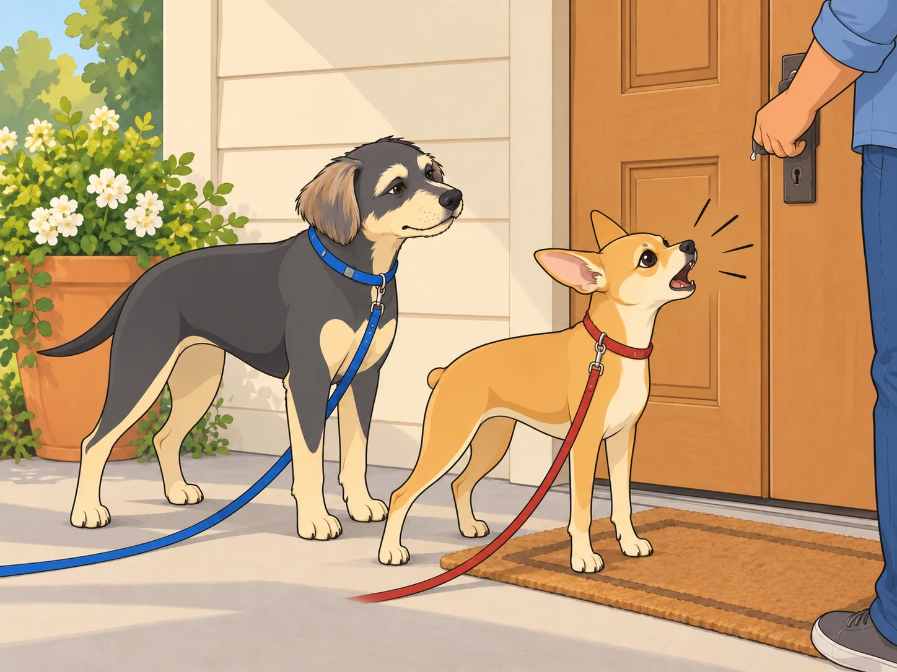
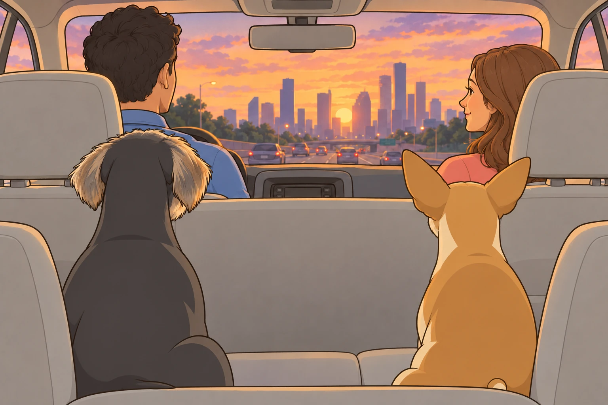
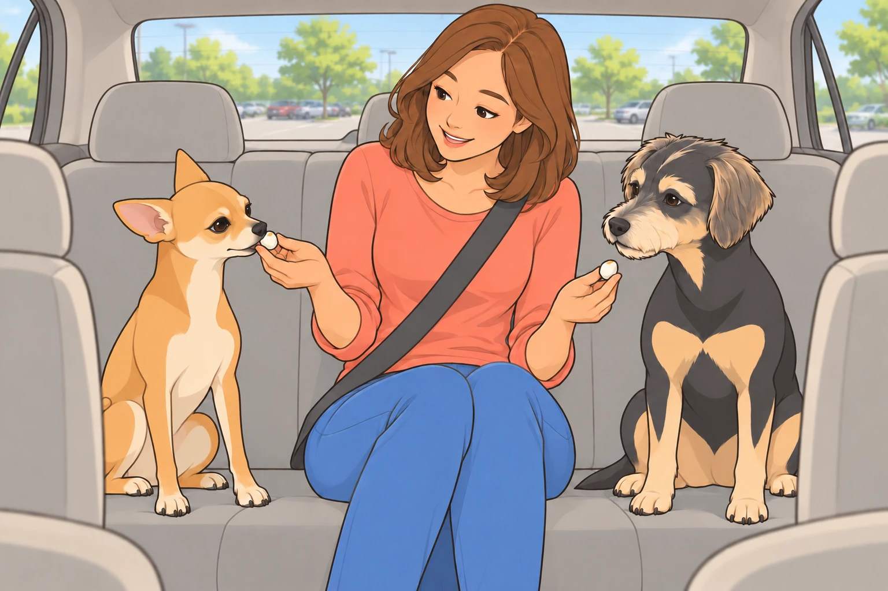
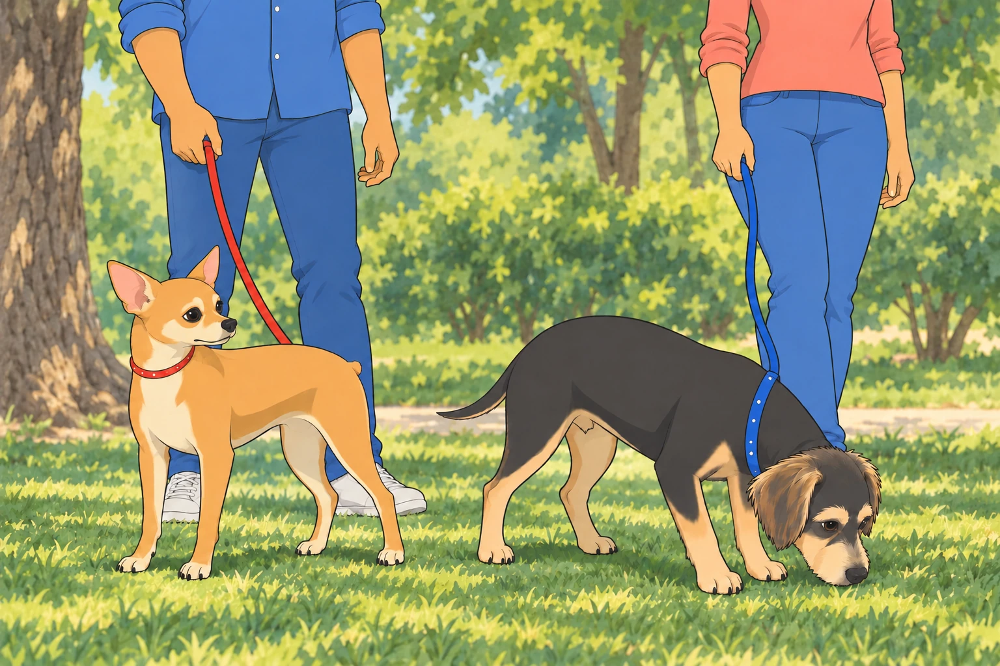

The morning sun painted Austin in shades of gold as Sagar loaded the last bag into the car. Neet conducted his pre-departure inspection with the seriousness of a tiny general, circling the vehicle three times before declaring it roadworthy with a single decisive bark.
"You check the same tires every time," Buddy observed from his spot in the shade.
"Security is no joke, Buddy."
"You're sniffing for squirrels."
"Security squirrels are the most dangerous kind."
Heather emerged from the house with the treat bag, and both dogs abandoned all pretense of dignity. Buddy’s tail swept the doorframe. Neet bounced once on his front paws.
"Easy, you ragamuffins," she laughed, scratching both heads simultaneously— a talent that never ceased to amaze Buddy. How did she know exactly where to scratch? It was uncanny.
Sagar opened the back door. "Alright, idiots. Load up."
Neet bounded in with his characteristic lack of grace, overshooting his target and sliding across the seat into Buddy, who had entered with infinitely more dignity.
"Personal space, lunatic."
"That's just my enthusiasm."
"That's your entire body weight on my paw."
Buddy withdrew the paw. Neet slid another inch.
"Your enthusiasm needs brakes."
The Road to Buc-ee's
The highway stretched endlessly, and Heather settled between the dogs in the back seat while Sagar drove. This was Buddy's favorite configuration— Heather's hand absently stroking his ears while the world blurred past, the gentle rumble of the road beneath them creating a peaceful rhythm.
Neet, predictably, had other ideas about how to spend travel time.
"I see a red car," he announced.
"Congratulations."
"Now I see a blue truck."
"This is riveting."
"OH! A motorcycle! Buddy, did you see the—"
"I saw it, Neet."
Buddy closed his eyes. If he could sleep through a vacuum cleaner, he could sleep through a traffic report.
"White van."
Apparently he could not.
Fifteen minutes of this passed before Neet's entire demeanor changed. His nose shot up, nostrils flaring like he'd caught wind of something biblical.
"What's wrong with him?" Heather asked, amused.
"He's having a moment," Buddy said, though of course she couldn't understand him.
"Buddy." Neet's voice had gone reverent. "Do you smell that?"
"I smell highway and the treat bag you've been staring at for twenty minutes."
"No. THAT." Neet pressed his nose to the window hard enough to leave a smear. "It's Buc-ee's."
Now Buddy perked up. Even he wasn't immune to the legend of Buc-ee's— that cathedral of excess where the bathrooms sparkled and the snack selection could make a grown dog weep.
Sagar took the exit, and the massive beaver mascot rose before them like a benevolent god welcoming faithful pilgrims.
"Charging stop," Sagar announced. "Fifteen minutes."
Fifteen minutes at Buc-ee's was like fifteen minutes in a parallel dimension where everything smelled incredible and the humans inexplicably needed to examine every possible variety of beef jerky.
The car parked, Sagar and Heather took the dogs for a quick walk around the grounds. Neet marked his territory on seventeen different spots (Buddy counted) while maintaining a running commentary about the strategic importance of each location.
"This trash can has hosted at least three other dogs today."
"How do you know?"
"Layers, Buddy. It's all about the layers."
When they returned to the car, Sagar carried a small bag that smelled like paradise.
"Did you really buy beef jerky?" Heather asked.
"It's for later."
"For the boys or for you?"
"Yes."
Buddy sat up very straight. He would demonstrate that one passenger could wait sensibly. When Sagar moved the bag from one hand to the other, Buddy’s whole head followed it. Sagar tried the movement once more. Same result.
"Excellent tracking," Sagar said.

In the back seat, Neet vibrated with anticipation. "He bought beef jerky. Buddy, he bought beef jerky. This is the best day of my life."
"You said that yesterday about the cheese."
"I was wrong then. I'm right now."
The Temple and the Lassi
An hour later, Houston's skyline emerged from the heat shimmer. The BAPS temple appeared like something from another world— pristine white marble gleaming under the Texas sun.
Sagar parked with the car’s climate control running. "We’ll take turns, boys." Heather stayed with the dogs while he went in; when he returned, she took her turn.
Buddy watched each of them walk toward the temple entrance. Their steps had slowed after the bustle of the drive. When Heather came back, her hand brushed Sagar’s arm as he passed her the bags.
"They look fancy," Neet observed.
"It's a temple. They're being respectful."
"By walking slowly?"
"By being present."
"You're getting philosophical again."
"One of us has to think."
Between their visits, they had collected containers that smelled like actual magic and two cold drinks.
"Gujarati thali," Heather said, settling back between the dogs. "And look— rose and pistachio lassi!"
Buddy lifted his nose toward the containers. Heather shifted them to her other hand.
"You remembered," she said, and Sagar's quiet "always" carried more weight than a thousand grand speeches ever could.
In the back seat, Neet sniffed the air. "That lassi smells pink."
"How can something smell pink?"
"I don't know, but it does."
The Bark Contest
The Airbnb was charming, tucked in a quiet neighborhood with trees and a neat little porch. Sagar had just inserted the key when both dogs heard it.
Woof.
Neet's ears shot up so fast Buddy heard them whoosh.
Woof. Woof.
"Oh, it's ON," Neet declared, his chest puffing up to twice its normal size— which, given his chihuahua roots, wasn't saying much, but he committed fully to the effort.
"Maybe we should be diplom—" Buddy started.
"WOOF! WOOF WOOF WOOF!"
And just like that, they were engaged in the ancient canine tradition of the Bark Contest— that timeless battle conducted through doors and walls, signifying everything and absolutely nothing.
"WOOF WOOF WOOF!" Neet proclaimed. This is MY family and MY temporary lodging and MY side of this door!
"WOOF WOOF!" came the response. Yeah well this is MY side!
"WOOF!"
"WOOF!"
This continued for approximately forty-five seconds before Sagar said, calmly, "Neet. Stand down."
But Neet was on a roll. "WOOF WOOF—"
"Neet."
"But Sagar—"
"You're barking at a door, lunatic," Buddy said. "You've established dominance over wood."
"It's the PRINCIPLE."

Buddy tried one low, conciliatory woof. The dog inside answered. Neet looked delighted.
"Reinforcements!"
Buddy shut his mouth. His peace talks had lasted one syllable.
The barking from the other side had devolved into confused woofs, as if the other dog was wondering why they were still doing this and if maybe they could be friends instead.
Heather knelt down, and both dogs immediately quieted. "Come on, numbskulls. Save your energy for the actual park."
Neet grumbled but conceded. "I totally won though."
"Undefeated champion," Buddy agreed, because some battles weren't worth fighting.
The Park That Wasn't
Evening arrived in shades of orange and purple as they headed out to find the park. Sagar drove while Heather navigated from her phone.
"Turn left at the light," she said.
"This light?"
"No, the next— wait, yes, this one. I think."
Ten minutes later, they'd circled the same block three times.
"The park should be right here," Heather said, less certain than before.
"We've passed that gas station four times," Neet whispered.
"I'm aware," Buddy replied.
"Should we tell them?"
"How, exactly?"
"Meaningful barking?"
Buddy had stood up at the first sight of grass. By the third pass he stayed seated and watched the same empty bench go by.
"I’ve chosen where to sit," he said. "Apparently we’re viewing it by appointment."
Another fifteen minutes of circling revealed the park's greatest defense: absolutely zero available parking. Cars filled every spot, double-parked, and possibly stacked on top of each other.
"I'm sorry," Heather said. "I thought this would be nice for everyone."
Sagar took her hand for just a moment— quick, easy, the kind of gesture that spoke of years of understanding. "Look."
They'd climbed onto an overpass, and there before them, Houston's skyline blazed against the darkening sky. Glass towers caught the last rays of sun, creating a light show that took Buddy's breath away.
"Oh," Heather breathed.
They rode in comfortable silence across the overpass, all four of them watching the city glow. No one needed to say anything. The moment was enough.

"Home's still better," Neet added eventually.
"Home's always better," Heather agreed, reaching back to scratch his ears. "But this is pretty good too."
The Wrong-Way Incident
"I'll drive back," Heather offered. "You've been driving all day, King."
They switched seats, Sagar adjusting everything for her before moving to the passenger side. The first few minutes went smoothly. Then came the turn.
"Wait," Sagar said, his voice carefully level. "Heather—"
"What?"
Then she saw them: headlights. Coming straight at them. Multiple pairs.
"Oh no. OH NO. I'm going the wrong way!"
In the back seat, Neet went rigid. "Buddy, this is how we die."
"Not today."
"HEATHER—" Sagar started.
But Heather's hands were already moving. She yanked the wheel right, bumped over a curb into a parking lot entrance, and executed a turn that would have impressed a stunt driver, emerging back onto the street in the correct direction.
For three heartbeats, nobody breathed.
Then Sagar started laughing. "That was... actually brilliant."
Heather's face had gone scarlet. "I can't believe I—"
"Quick thinking, Queen. Most people would have frozen."
"I almost killed us!"
"You fixed it. Let’s stop here a minute." Once she had parked, his hand found hers. "My quick-thinking queen."
Buddy watched as Heather's embarrassment slowly transformed into a reluctant smile, then actual laughter.
"Your FACE though—"
"I thought you were aiming for the lake!"
"What lake?!"
"I don't know, you seemed determined!"
In the back seat, Neet's tail started wagging again. "We survived."
"Barely."
"That was actually kind of exciting."
"You thought we were going to die."
"I've evolved past that position."
Buddy looked down. Neet was still pressed firmly against his side.
"Then you can evolve back onto your own half of the seat."
"In a minute."
Starbucks and Egg Bite Philosophy
The next morning, they stopped at Starbucks for breakfast. Sagar ordered coffees and egg bites, and the smell of eggs and cheese filled the car like olfactory heaven.
Heather broke off pieces for the dogs with the solemnity of a sacred ritual. Neet consumed his first bite in approximately .003 seconds.
"Buddy. BUDDY. This is a religious experience."
"It's eggs."
"It's PHILOSOPHY wrapped in protein."
"You said that about the beef jerky yesterday."
"I contain multitudes, Buddy. These egg bites understand me on a molecular level."
Buddy accepted his piece with more dignity, letting the flavor settle. It was, admittedly, exceptional. "These are very good."
He intended to make his piece last. His mouth made a separate decision.
"VERY GOOD? Buddy, these transcend mere goodness. These egg bites have seen the face of the divine and—"
"Neet."
"I'm just saying, if I could only eat one thing—"
"You'd starve because you'd change your mind in ten minutes."
Heather laughed, breaking off another piece for each of them. Neet took his gently, without catching her fingers.

Buddy waited until she turned to him, then did the same.
The Small Park and the Journey Home
Before heading back, they found a smaller park— just a quiet green space with some trees. Nothing special, but as they walked together, Buddy thought it might be perfect anyway.
Neet investigated a tree with intense focus. "Seventeen different dogs have been here."
"You can't possibly know that."
"Seventeen. I counted the layers."
Buddy led Heather toward a patch of shade and took his time over its smells. At last, a park they could actually use. Sagar and Heather’s restaurant dinner the night before had yielded a container of paneer that Neet called “transcendent.” The egg bites had improved on that. Buddy, for the moment, was satisfied with grass.
Neet finished his report and turned to lead the way. Buddy remained over one small patch.
"We’ve inspected that."
"You’ve counted it. I haven’t smelled it."
Heather let the leash slacken. Buddy took another luxurious breath. At last, someone understood the itinerary.

"You know what's funny?" Neet said. "All this adventure, and I keep thinking about home."
"Me too."
"Our yard. Our bed. Our spot on the couch."
"The way the afternoon light hits the kitchen floor."
"The sound of Sagar making coffee in the morning."
"Heather singing when she thinks no one's listening."
They completed their loop and loaded back into the car. As they pulled onto the highway toward Austin, Heather dozed between them, and Neet surrendered to a nap against the window.
But Buddy stayed awake, watching the road unspool behind them. Sagar glanced back in the mirror. Buddy met his eyes, then rested his chin beside Heather’s hand. Familiar countryside was beginning to appear.
When they finally pulled into their driveway, the sun was setting, painting their house in golden light. It looked exactly the same as when they'd left— and somehow more beautiful for having been missed.
"Home," Heather said softly.
"Home," Sagar agreed.
Neet jerked awake. "We're back! Buddy, we're—"
"I can see that."
They tumbled out and immediately inspected the yard. Everything was exactly as they'd left it. The grass still smelled right. The fence still stood guard. Their kingdom remained intact.
Inside, the dogs claimed their favorite spots— Neet on the rug by the door where he could monitor all comings and goings, Buddy on the couch where he could see everyone. Sagar came toward the couch while Heather made tea, and Neet trotted over to complete their circle.
Buddy moved just enough to make room for Sagar on the couch. He could see Heather making tea and Neet approaching across the rug. After a day of looking through car windows, he could stop keeping track.
"Best trip ever," Neet mumbled, already half-asleep.
"Best trip ever," Buddy agreed.
Outside, the Texas evening settled over Austin like a blanket. Inside, a family of four— two humans and two dogs— rested in the perfect comfort of being exactly where they belonged.
Home. With each other. Where all the best stories ended.
THE END